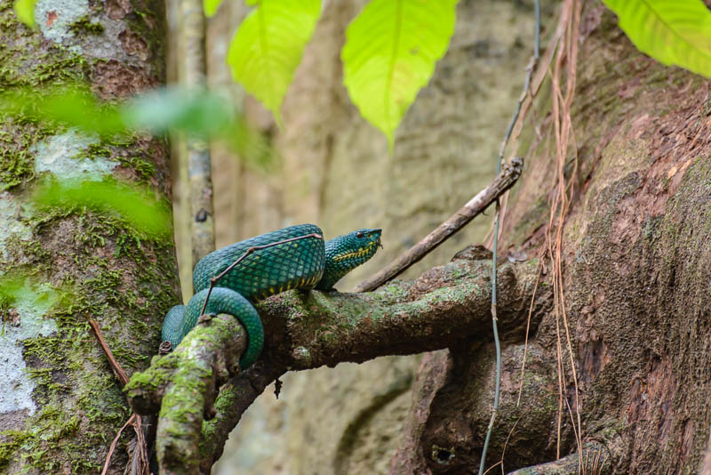
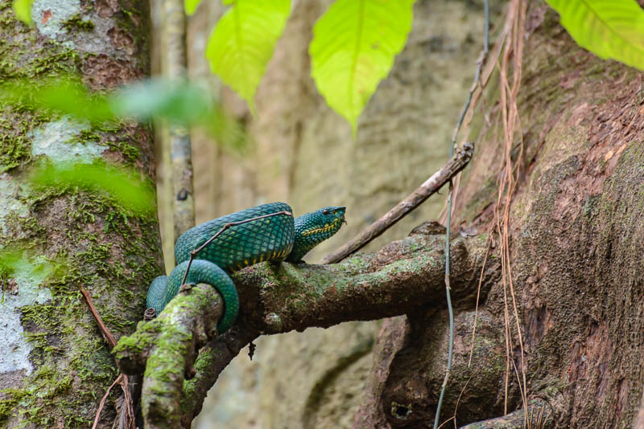

Wir sind nach dem Ausflug zu den Pinnacles noch länger in Mulu geblieben, um durch den Nationalpark zu spazieren. Hier gibt es zum Beispiel einen Canopy Walk, der über Hängebrücken auf 30m Höhe durch die Bäume führt. Der Perspektivenwechsel zeigt vor allem eins: Oben sieht es so aus wie unten. Das ist insofern besonders, weil die Pflanzen hier in jeder Höhe wachsen. Ranken, Büsche, Bromelien, Farne, Orchideen, ja sogar ganze Bäume wachsen auf anderen Bäumen, krallen sich an Lianen fest oder finden ihren Boden auf einer Astgabelung in luftiger Höhe. Das ist auch das Faszinierende am Regenwald. Alles wächst übereinander und verschlingt sich gegenseitig. Wir haben Farne gesehen, die auf großen Pilzen wuchsen, die an einem umgestürzten Baum klebten. Sicher lebt bald auf dem Farn auch etwas Neues. Die Seile der Hängebrücken sind grün bemoost, von dünnen Lianen umwickelt und beheimaten alle paar Meter eine Bromelie. Der Dschungel ist eine große Recyclinganlage in einem permanenten Gleichgewicht von Verfall und Wachstum. Die Würgefeigen helfen dabei kräftig mit, indem sie sich an großen Bäumen hochziehen und sie umwuchern, bis der Baum abstirbt. Wenn der Baum dann von einem Windstoß umgeblasen wird, reißt er eine Schneise in den dichten Wald, durch das plötzlich Sonnenlicht bis zum Boden kommt – die Chance für kleinere, schnell wachsende Pflanzen ein bisschen Photosynthese zu betreiben, bis ein neuer Baum auf dem ewigen Kompost gediehen ist.
Nach einem Regenguss dampft der ganze Wald das Wasser wieder aus. Es würde niemanden wundern, wenn "Borneo" das Iban-Wort für "Mücken und Schweiß" wäre. Zumindest haben wir unseren Teil zur Nahrungskette beigetragen. Als Entschädigung haben wir dafür jede Menge Viecher, von giftigen Tausendfüßlern bis zu getarnten Stabinsekten, vor die Linse bekommen. Die einfachen Wanderwege vom Headquarter aus kann man problemlos ohne Führer gehen. So kann man schön trödeln und unter jedem Blatt nach einer Entdeckung suchen. Ali hat einen winzigen grünen Frosch gefunden, der bestimmt eine neue Spezies ist. Als Highlight am Schluss der Wanderung wartete noch eine blau-grüne Viper hoch oben in einem Baum auf uns.
 

Am Abend sind wir einen Teil der Strecke nochmal als Nachtwanderung gegangen. Das sollte man sich nicht entgehen lassen! Die bizarren Insekten, die man im Lichtkegel der Lampen der Dunkelheit entreißen kann, erinnern an einen Nachttauchgang. Mit geübteren Augen als unseren kann man Schlangen, Spinnen, Fröschen und vor allem Insekten in jeder Form sehen.